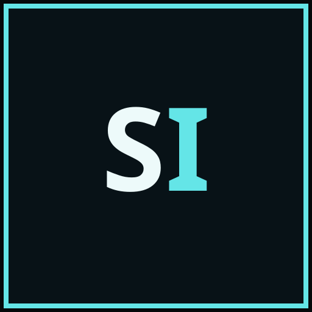

01
NAVIGATION
Replay the moment that matters.
Search, jump, fold, and follow the exact turn where the plan changed — without losing your place in a long session.

SESSIONINSIGHTLOCAL-FIRST OBSERVABILITY FOR AI CODING SESSIONS
Replay the work, follow the evidence, and understand the decisions behind every agent session — on your machine.
Open source · local data · built for long sessions
The actual Session Insight interface. Captured from a real local session.
01THE INSIGHT LAYER
Your agent did more than print messages. Session Insight turns the whole run into a navigable, inspectable record.
NAVIGATION
Search, jump, fold, and follow the exact turn where the plan changed — without losing your place in a long session.
PROVENANCE
Connect tool calls, files, commits, change requests, and approvals into an evidence trail you can inspect.
COLLABORATION
Make child agents, tasks, handoffs, and parallel work visible in one timeline.
02A SIGNAL, NOT ANOTHER CHAT WINDOW
A session is a system: context pressure, repeated work, risky actions, useful evidence, and decisions over time.
03DESIGNED FOR THE LONG RUN
Use it after the magic wears off — when the context is huge, the agent has branched, and you need to know what to trust.
Index local sessions and get a fast map of turns, tools, files, and active agents.
Search exact terms, jump to first or last matches, and anchor the viewport to the evidence.
Connect the outcome to commits, pull requests, reviews, and the people or agents involved.
ONE COMMAND TO START
No hosted account. No upload step. Just a local window into the work already on your machine.
04LOCAL BY DESIGN
Session Insight is built as a local developer tool. It reads the session roots you choose, builds a local index, and gives you an inspection layer without asking you to move your work into another cloud.
THE NEXT SESSION IS ALREADY WAITING
Start with the source. Keep the data local. See the signal.